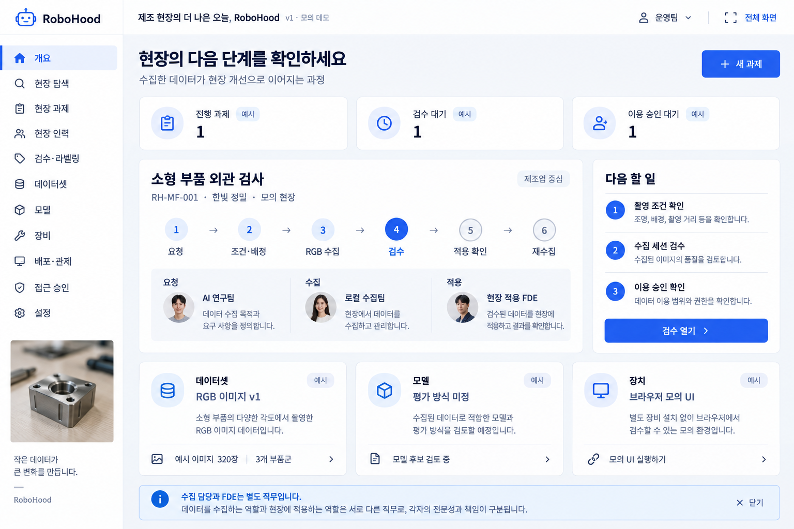

<!doctype html><html lang="ko"><meta charset="utf-8"><meta name="viewport" content="width=device-width,initial-scale=1"><title>RoboHood 개선 이미지</title><link rel="stylesheet" href="../../../dist/manufacturing/assets/pretendard.css"><style>body{font:16px/1.6 "Pretendard",-apple-system,BlinkMacSystemFont,"Apple SD Gothic Neo","Noto Sans KR",sans-serif;letter-spacing:-.01em;-webkit-font-smoothing:antialiased;color:#0f172a;background:#f4f7fb;margin:0;padding:32px}main{max-width:1400px;margin:auto}a{color:#1d4ed8}h1{font-size:32px;letter-spacing:-.03em;font-weight:700}p{color:#475569}.grid{display:grid;grid-template-columns:repeat(auto-fit,minmax(280px,1fr));gap:24px}.card{background:white;border:1px solid #d5dde7;border-radius:12px;padding:18px;min-width:0}.card img{width:100%;height:230px;object-fit:contain;background:#f4f7fb;border:1px solid #e2e8f0;border-radius:6px}.card h2{font-size:18px;margin:16px 0 8px;letter-spacing:-.02em;font-weight:600}.links{display:flex;gap:16px;flex-wrap:wrap}.meta{font-size:14px;color:#64748b}.hero{padding:24px;background:white;border:1px solid #d5dde7;border-radius:12px;margin-bottom:24px}svg{width:25px;height:25px;vertical-align:middle}.button{display:inline-block;background:#2563eb;color:white;text-decoration:none;padding:12px 18px;border-radius:8px;margin:16px 10px 0 0;letter-spacing:-.02em;font-weight:600}@media(max-width:600px){body{padding:20px 16px}.grid{grid-template-columns:1fr}h1{font-size:27px}}</style><main><h1>RoboHood · 개선 이미지</h1><p>imagegen과 Stitch의 장점을 합친 두 제품의 독립 시안입니다.</p><div class="grid"><article class="card"><h2>제조업 중심 · 21화면</h2><a href="./manufacturing.html">전체 생성 이미지 보기</a></article><article class="card"><h2>소상공인 중심 · 20화면</h2><a href="./small-business.html">전체 생성 이미지 보기</a></article></div><p><a href="./prompts.json">화면별 생성 프롬프트</a></p></main></html>